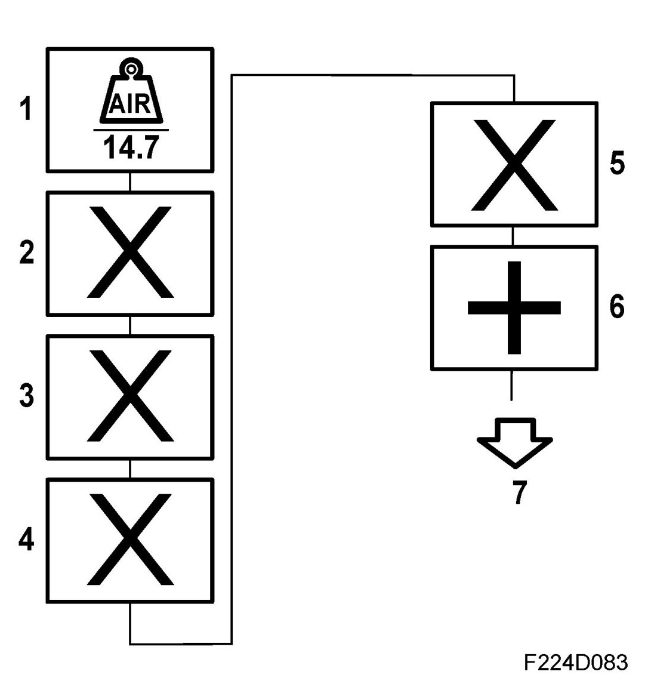
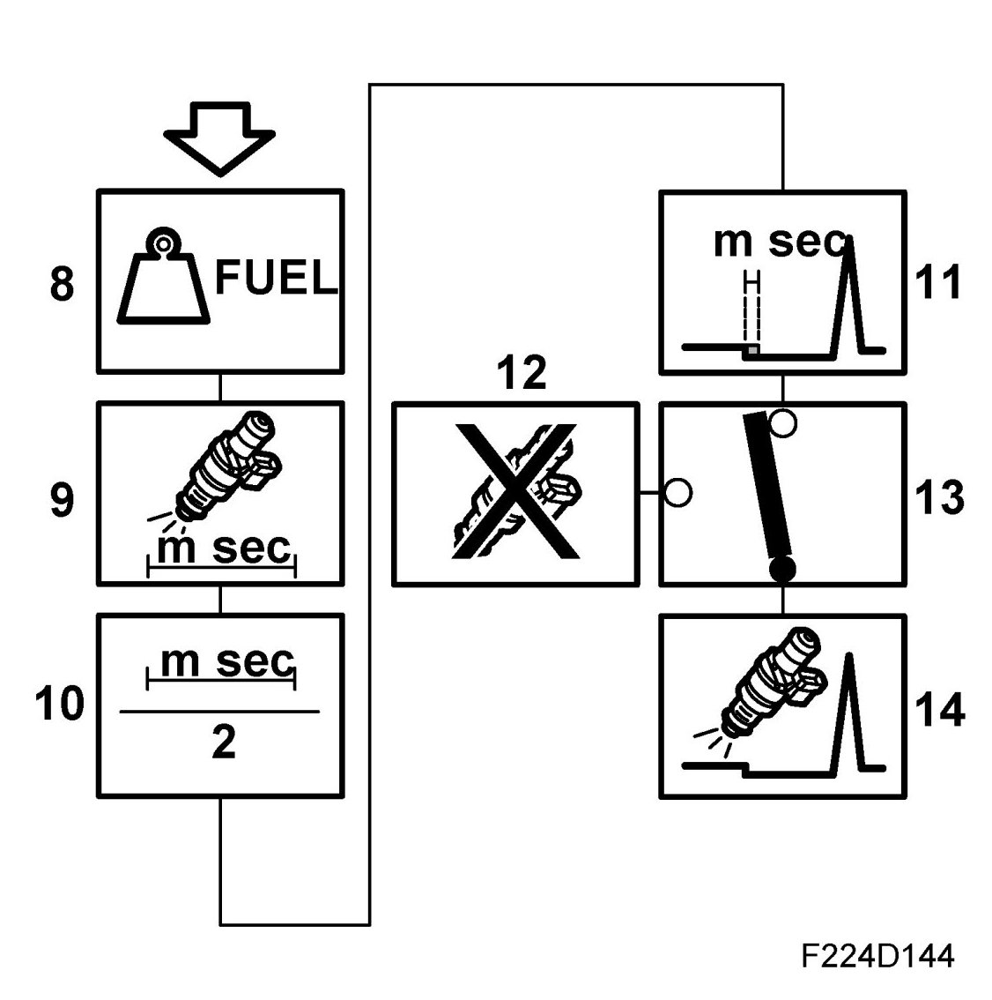

Fuel Injection, Basic Function
Fuel Injection, Basic Function
1. Basic calculation of fuel mass/combustion

The current air mass/combustion is divided by 14.7 and moved to section 2. The unit is now mg fuel/combustion.
2. Compensation
In cases of cold engine, short time after start, fast load changes, knocking or high load, the current value is multiplied by a compensation factor.
3. Lambda control
The lambda control value is multiplied in. The value is moved to section 4.
4. Correction for purge
Multiply by the value for purge adaptation. The value is moved to section 5.
5. Multiplicative adaptation
The value from the multiplicative adaptation is multiplied in and the new value moved to section 6.
6. Additative adaptation
The value from the additative adaptation is multiplied in and the new value moved to section 7.
7. Start fuel mass
If the engine has not yet started, the start fuel mass is determined.
8. Fuel mass/combustion

The fuel mass/combustion is the mass of petrol to be added to the engine on each combustion.
9. Injector opening time
Converts the fuel mass to injector opening time in ms.
10. On injection twice/combustion
Before the engine is synchronized, i.e. the camshaft position found by means of the ignition system, injection occurs twice per combustion. The injection time calculated in block 12 is divided by two.
11. Needle lift compensation
The voltage-dependent needle lift time is added to the injection time. This compensates for the delay between activation of the current in the injector coil and supply of the fuel.
12. Fuel shut-off
Under certain conditions, e.g. on engine braking, car immobilized, the fuel shutoff can apply. The injection time is then zero.
13. Selection of fuel shut-off function
14. Activation of injector
The ECM controls the injector which is currently supplying fuel, and the sequence is controlled by the ignition sequence. The camshaft angle at which injection takes place depends on the prevailing operating conditions.